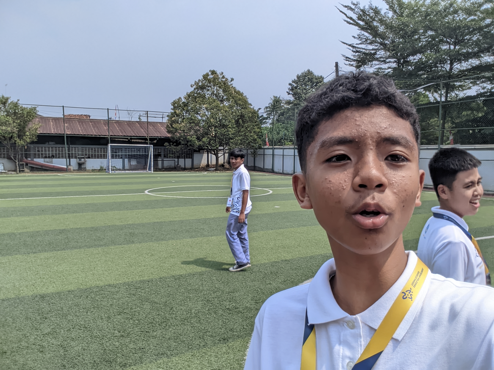

Salam kenal! Saya adalah siswa SNT. Kali ini saya akan membagikan pengalaman saya selama mengikuti kegiatan MPLS. Semoga jurnal ini bisa memberikan gambaran yang jelas tentang perjalanan saya dan teman-teman selama kegiatan tersebut. Terima kasih telah berkunjung!
Lihat Jurnal MPLS SAYA! ➔